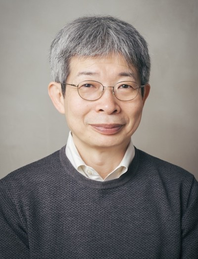
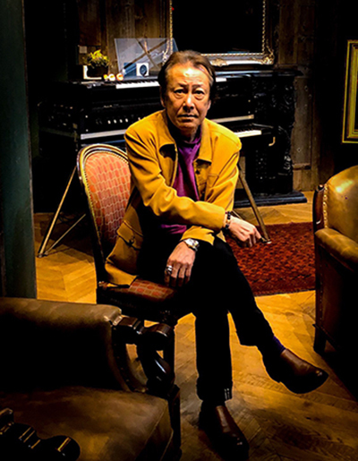
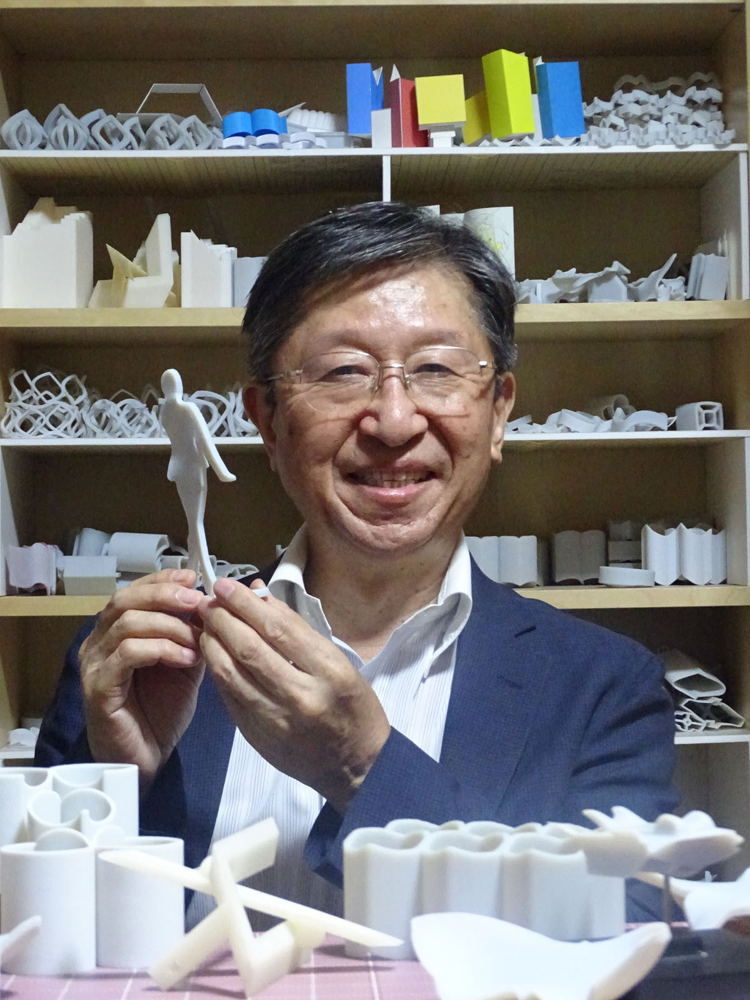

「リアルのメカニズム」

講演者：平田オリザ
劇作家・演出家・青年団主宰。江原河畔劇場 芸術総監督。 城崎国際アートセンター芸術監督。こまばアゴラ劇場芸術総監督。豊岡演劇祭フェスティバル・ディレクター。兵庫県豊岡市に2021年開学予定の国際観光芸術専門職大学（仮称・構想中）学長候補者。四国学院大学社会学部教授、大阪大学COデザインセンター特任教授、東京藝術大学COI研究推進機構特任教授。
「世界を席巻するアニメ声優の魅力と技術」

講演者：堀川 りょう
1958年2月1日、大阪府生まれ。 1984年に声優デビュー。 「ドラゴンボール」ベジータ役、「聖闘士星矢」アンドロメダ瞬役、「名探偵コナン」服部平次役など、幅広い役柄を演じる声優として活躍中。英検準1級の資格も持ち，海外で開催されるイベントなどでは通訳を介さずに世界中のファンとふれあう国際的な活動でも知られる。
「不可能立体への挑戦 ～数理で探る視覚の不条理～」

講演者：杉原 厚吉（明治大学研究特別教授）
1973年東京大学大学院修士課程修了後、電子技術総合研究所、名古屋大学、東京大学などを経て、2009年より明治大学へ着任し、2019年4月より現職。専門は数理工学。ロボットの目を開発する研究の中で、不可能図形のだまし絵を立体化する手法を見つけ、立体錯視の分野へも研究を広げてきた。さまざまな不可能立体を創作し、立体錯視アーティストとしても活躍している。国際ベスト錯覚コンテスト優勝3回、準優勝2回。錯視立体作品は、2018年9月より2020年5月までの1年8ヶ月にわたって台湾の国立故宮博物院で特別展示されるなど、多くの科学館・美術館で展示の実績を持つ。